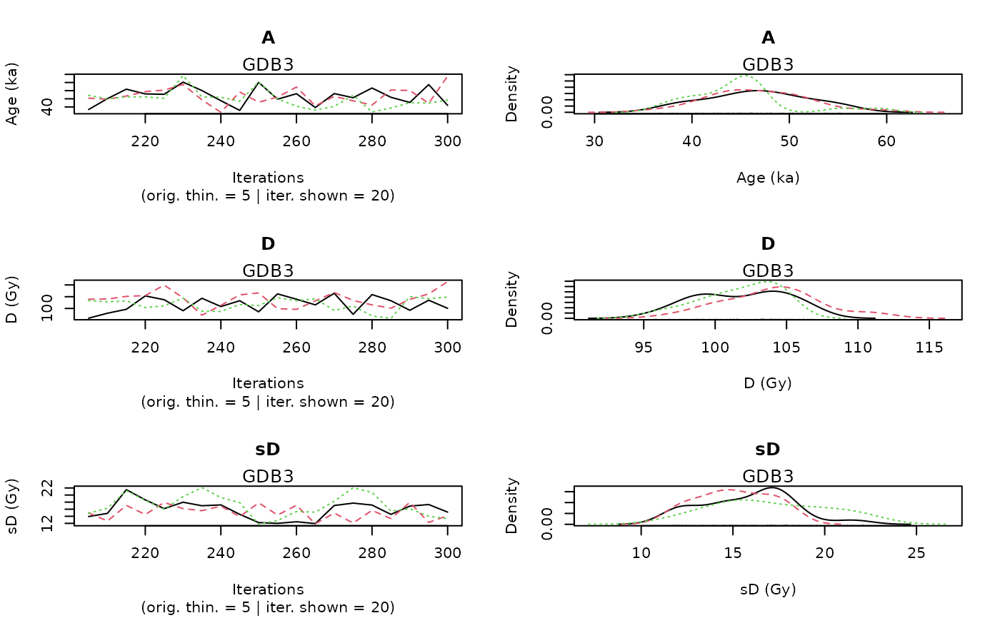

Bayesian analysis for the OSL age estimation of one sample
Source:R/Age_Computation.R
Age_Computation.RdThis function computes the age (in ka) of a sample according to the model developed in Combes and Philippe (2017),
based on an output of Generate_DataFile or Generate_DataFile_MG.
A sample, for which data is available in several BIN files, can be analysed.
Usage
Age_Computation(
DATA,
SampleName = DATA$SampleNames[1],
PriorAge = c(0.01, 100),
BinPerSample = c(1),
SavePdf = FALSE,
OutputFileName = c("MCMCplot"),
OutputFilePath = c(""),
SaveEstimates = FALSE,
OutputTableName = c("DATA"),
OutputTablePath = c(""),
LIN_fit = TRUE,
Origin_fit = FALSE,
distribution = c("cauchy"),
I = 1,
Iter = 50000,
t = 5,
n.chains = 3,
quiet = FALSE,
roundingOfValue = 3
)Arguments
- DATA
list of objects:
LT,sLT,ITimes,dLab,ddot_env,regDose,J,K,Nb_measurement, provided by the function Generate_DataFile or Generate_DataFile_MG.DATAcan contain information for more than one sample.- SampleName
character: name of the sample.
- PriorAge
numeric (with default): lower and upper bounds for the sample age parameter (in ka). Note that,
length(PriorAge)=2.- BinPerSample
integer (with default): vector with the number of BIN files per sample. If in
DATAthere is more than one sample, theBinPerSamplevector must be the same as that used to run the function Generate_DataFile or in Generate_DataFile_MG for generating theDATAobject.- SavePdf
logical (with default): if TRUE save graph in pdf file named
OutputFileNamein folderOutputFilePath.- OutputFileName
character (with default): name of the pdf file that will be generated by the function if
SavePdf = TRUE;length(OutputFileName = 2, see PLOT OUTPUT in Value section for more informations.- OutputFilePath
character (with default): path to the pdf file that will be generated by the function if
SavePdf = TRUE. If it is not equal to "", it must be terminated by "/".- SaveEstimates
logical (with default): if TRUE save Bayes estimates and credible interval at level 68% and 95% and the result of the gelman en Rubin test of convergency, in a csv table named
OutputFileNamein folderOutputFilePath.- OutputTableName
character (with default): name of the table that will be generated by the function if
SaveEstimates = TRUE.- OutputTablePath
character (with default): path to the table that will be generated by the function if
SaveEstimates = TRUE. If it is not equal to "", it must be terminated by "/".- LIN_fit
logical (with default): if
TRUE(default) allows a linear component, on top of the (default) saturating exponential curve, for the fitting of dose response curves. See details section for more informations on the proposed dose response curves.- Origin_fit
logical (with default): if
TRUE, forces the dose response curves to pass through the origin. See details section for more informations on the proposed growth curves.- distribution
character (with default): type of distribution that defines how individual equivalent dose values are distributed around the palaeodose. Allowed inputs are
"cauchy","gaussian","lognormal_A"and"lognormal_M", see details section for more informations.- I
integer (with default): if
DATAcontains data from more than one sample, I indicates the ID number of the sample to be analysed.- Iter
integer (with default): number of iterations for the MCMC computation (for more information see rjags::jags.model).
- t
integer (with default): 1 every
titerations of the MCMC is considered for sampling the posterior distribution (for more information see rjags::jags.model).- n.chains
integer (with default): number of independent chains for the model (for more information see rjags::jags.model).
- quiet
logical (with default): enables/disables rjags::rjags-package messages
- roundingOfValue
integer (with default): Integer indicating the number of decimal places to be used, default = 3.
Value
NUMERICAL OUTPUT
A list containing the following objects:
Sampling that corresponds to a sample of the posterior distributions of the age (in ka), palaeodose (in Gy) and equivalent dose dispersion (in Gy) parameters.
Model_GrowthCurve, stating which dose response fitting option was chosen;
Distribution, stating which distribution was chosen to model the dispersion of individual equivalent dose values around the palaeodose of the sample;
PriorAge, stating the priors used for the age parameter (in ka).
The Gelman and Rubin test of convergence: prints the result of the Gelman and Rubin test of convergence for the age, palaeodose and equivalent dose dispersion parameters. A result close to one is expected.
In addition, the user must visually assess the convergence of the trajectories by looking at the graph generated by the function (see PLOT OUTPUT for more informations).
If both convergences (Gelman and Rubin test and plot checking) are satisfactory, the user can consider the printed estimates as valid. Otherwise, the user may try increasing the number of MCMC iterations (Iter), or being more precise on thePriorAgeparameter (for example specify if it is a young samplec(0.01,10)an old samplec(10,100)), or changing the parameterdistributionor the growth curve, to reach convergence.to reach convergence.Credible intervals and Bayes estimates: prints the Bayes estimates, the credible intervals at 95% and 68% for the age, palaeodose and equivalent dose dispersion parameters of the sample.
PLOT OUTPUT
A graph with the MCMC trajectories and posterior distributions of the age, palaeodose and equivalent dose dispersion parameters is displayed.
The first line of the figure correponds to the age parameter, the second to the palaeodose parameter and the third to the equivalent dose dispersion parameter.
On each line, the plot on the left represents the MCMC trajectories, and the one on the right the posterior distribution of the parameter.
To give the results in a publication, we recommend to give the Bayes estimate of the parameter as well as the credible interval at 95% or 68%.
Details
Option on growth curves
As for AgeS_Computation and Palaeodose_Computation, the user can choose from 4 dose response curves:
Saturating exponential plus linear growth (
AgeMultiBF_EXPLIN):for all
xin IR+, \(f(x)=a(1-exp(-x/b))+cx+d\); selectLIN_fit=TRUEOrigin_fit=FALSE
Saturating exponential growth (
AgeMultiBF_EXP):for all
xin IR+, \(f(x)=a(1-exp(-x/b))+d\); selectLIN_fit = FALSEOrigin_fit = FALSE
Saturating exponential plus linear growth and fitting through the origin (
AgeMultiBF_EXPLINZO):for all
xin IR+, \(f(x)=a(1-exp(-x/b))+cx\); selectLIN_fit=TRUEOrigin_fit=TRUE
Saturating exponential growth and fitting through the origin (
AgeMultiBF_EXPZO):for all
xin IR+, \(f(x)=a(1-exp(-x/b))\); selectLIN_fit=FALSEOrigin_fit=TRUE
Option on equivalent dose distribution around the palaeodose
The use can choose between :
cauchy: a Cauchy distribution with location parameter equal to the palaeodose of the samplegaussian: a Gaussian distribution with mean equal to the palaeodose of the samplelognormal_A: a log-normal distribution with mean or Average equal to the palaeodose of the samplelognormal_M: a log-normal distribution with Median equal to the palaeodose of the sample
Note
Please note that the initial values for all MCMC are currently all the same for all chains since we rely on the automatic initial value generation of JAGS. This is not optimal and will be changed in future. However, it does not affect the quality of the age estimates if the chains have converged.
How to cite
Christophe, C., Kreutzer, S., Philippe, A., Guérin, G., 2024. Age_Computation(): Bayesian analysis for the OSL age estimation of one sample. In: Christophe, C., Philippe, A., Kreutzer, S., Guérin, G., Baumgarten, F.H., Frerebeau, N., 2024. BayLum: Chronological Bayesian Models Integrating Optically Stimulated. R package version 0.3.3.9000-13. https://CRAN.r-project.org/package=BayLum
References
Combes, Benoit and Philippe, Anne, 2017. Bayesian analysis of multiplicative Gaussian error for multiple ages estimation in optically stimulated luminescence dating. Quaternary Geochronology (39, 24-34)
Combes, B., Philippe, A., Lanos, P., Mercier, N., Tribolo, C., Guerin, G., Guibert, P., Lahaye, C., 2015. A Bayesian central equivalent dose model for optically stimulated luminescence dating. Quaternary Geochronology 28, 62-70. doi:10.1016/j.quageo.2015.04.001
Examples
## load data file generated by the function Generate_DataFile
data(DATA1,envir = environment())
priorage <- c(10,60) # GDB3 is an old sample
Age <- Age_Computation(
DATA = DATA1,
SampleName = "GDB3",
PriorAge = priorage,
Iter = 100,
quiet = TRUE)
#> Warning: [plot_MCMC()] 'n.iter' out of range, reset to number of observations

#>
#>
#> >> Sample name <<
#> ----------------------------------------------
#> GDB3
#>
#> >> Results of the Gelman and Rubin criterion of convergence <<
#> ----------------------------------------------
#> Point estimate Uppers confidence interval
#> A 0.991 0.995
#> D 1.029 1.119
#> sD 1.045 1.181
#>
#>
#> ---------------------------------------------------------------------------------------------------
#> *** WARNING: The following information are only valid if the MCMC chains have converged ***
#> ---------------------------------------------------------------------------------------------------
#>
#> parameter Bayes estimate Credible interval
#> ----------------------------------------------
#> A 46.629
#> lower bound upper bound
#> at level 95% 36.86 57.949
#> at level 68% 40.47 48.289
#> ----------------------------------------------
#> D 104.692
#> lower bound upper bound
#> at level 95% 97.277 108.278
#> at level 68% 103.068 107.542
#> ----------------------------------------------
#> sD 15.526
#> lower bound upper bound
#> at level 95% 10.156 19.578
#> at level 68% 11.062 15.991